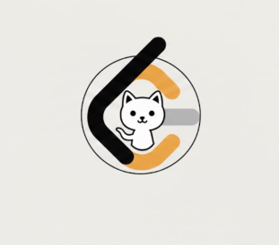

LeetSyncGit

Checking GitHub connection…
One-time setup:
1. Create a GitHub repository
(any name you like)
2. Create a Fine-Grained PAT with:
• Repository access: Only selected repo
• Permissions: Contents → Read & Write
3. Click Connect GitHub and paste the token
4. Select the repository once
🔐 Security & Privacy
• No backend or server
• Token stored only on your device
• Access limited to selected repository